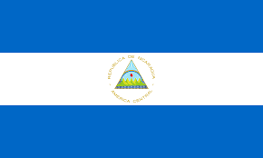
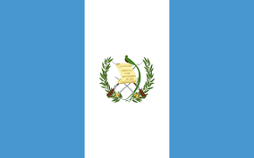
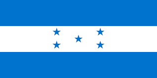

|
|
 Una región puede referirse a una «porción de territorio»1? constituida por aspectos como el clima, topografía o administración.1? Así mismo, puede referirse a las «características geográficas, históricas y sociales»1? de una nación.
 Puede tratarse de un área o extensión determinada de tierra más grande que las subregiones o subdivisiones que la constituyen, ya se trate de un continente como Europa, Asia, América, África, así como una parte de dicho continente (Europa Central o América del Sur), un país o conjunto de países, una cuenca, como la cuenca del Orinoco o del Danubio, una cordillera o región montañosa, etc., y mayor que un sitio específico.
 Así, una región puede ser vista como el conjunto continuo de unidades más pequeñas (por ejemplo, «los países de América Latina») o como la sección de un todo más grande (como «las regiones polares de la Tierra»). Así, el concepto de región está indisolublemente ligado al de escala, por lo que podemos considerar la existencia de regiones de muy diverso tamaño, desde regiones supranacionales (por ejemplo, Comunidad Europea, Región Andina, etc.) hasta pequeñas comarcas o un reducido valle de montaña.